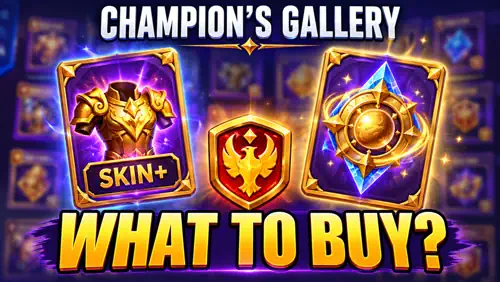
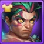

Before you spend 390,000 Ascension Crests on Crow, ask yourself: is he part of your main team? This Champion's Gallery rotation features Ocean Echo Skin+, Satori and Cascade Relic Shards, and Eva resources. My priority is to improve the team you actually use, while planning the separate mission rewards for Soleil, Helios, Fafnir, and Qing Mao.

Ascendant Glory Guides
 Event Group Overview
Event Group Overview Rising Legend
Rising Legend Trial of Legends
Trial of Legends Spark of Glory
Spark of GloryWhere I Would Spend My Ascension Crests
Crow's skin is the first decision, not an automatic purchase. For a main-team Crow, consider the 90,000-Crest base skin and the 300,000-Crest upgrade. If you skip Skin+ or have already bought it, my next priorities are useful relic shards, Eva's weapon and the books for Crow and Eva, then Skin Stones. Every purchase should support a hero you are actually building.
Crow's Ocean Echo Skin and Skin+: 390,000 Crests in Total
You can earn Ascension Crests through event missions and buy the base Ocean Echo skin for 90,000 Crests. After acquiring the base skin, Skin+ costs another 300,000 Crests. Starting without the base skin means budgeting 390,000 Crests in total. Earning the currency through play does not mean every account can afford both purchases.
| Purchase | Ascension Crests | What You Get |
|---|---|---|
| Base Ocean Echo skin | 90,000 | Unlocks the base skin and is required before buying Skin+ |
 Ocean Echo Skin+ | 300,000 after acquiring the base skin | 14,190 total Physical Attack at maximum level |
| Full base-plus-upgrade path | 390,000 | Both purchases; leveling the skin still requires Skin Stones |
The 14,190 bonus is the maximum Skin+ value, not an extra 14,190 on top of the base skin. Unlocking the skin does not immediately grant its maximum stats.
How This Skin Helps Crow in Battle
Crow's damage formulas scale with Physical Attack. Ocean Echo Skin+ strengthens his opening attacks and the damage from repeated Silence. Silence stops an enemy from using skills while it lasts; Crow's kit also punishes repeated Silence with damage. The skin improves that damage, rather than guaranteeing a win or a longer Silence duration.
In my upgrade order, Crimson Justice's Armor Penetration comes before Ocean Echo's Physical Attack. More attack still needs to get through enemy Armor. If Crow cannot survive long enough to repeat his control, his Health skin may need attention too. Read the Crow skin priorities for the full build.
Alexandre's View: Buy for Your Main Team
For F2P players building Crow, I would prioritize the base skin: it saves a future Skin Certificate or 5,000 Skin Stones for the unlock. I would pursue Skin+ only if Crow is in my main team and my saved resources can cover the cost. Spenders have more room to invest, but the purchase still needs to fit the team.
If Crow is not a current priority, I would spend the Crests elsewhere and wait roughly five months for the base skin's expected wider release. Saving the unlock cost is useful, but spending 90,000 Crests on a hero you will not use can delay upgrades for your main team.
Why Waiting for Skin+ Is Different
After the expected wait of about five months, Skin+ enters the Heroic Chest pool alongside other Skin+ rewards. The 400-opening reward is random: getting a Skin+ does not mean getting Crow's. Daily free and advertisement openings help, but additional openings can cost substantial Emeralds. Do not confuse Heroic Chests with the Outland Chests discussed below.
Plan Before Spending Toward Skin+
F2P players need saved resources and a realistic mission plan. Check whether you can reach the full 390,000-Crest path before committing your budget. Spending on every new hero's skin can leave your main team short of relics, artifacts, and Skin Stones.
Next Priority: Satori and Cascade Relic Shards
If you skip Crow's upgrade or already own it, I would next consider Satori Relic Shards when building him. Satori is an explosive mage and, in my experience, a frequent pick in high-ranked Arena teams. Cascade can be strong too, but I would buy her shards only if she is part of my main team.
| Hero | One Purchase | Purchase Limit | Maximum Total |
|---|---|---|---|
| Satori | 2 shards for 9,300 Crests | 10 purchases | 20 shards for 93,000 Crests |
| Cascade | 2 shards for 9,300 Crests | 10 purchases | 20 shards for 93,000 Crests |
Unlocking a level-one relic requires 50 hero-specific Relic Shards. Universal Relic Shards cannot perform this first unlock. This shop's 20 shards alone are not enough: if you start from zero, you still need 30 more hero-specific shards.
Count the shards you already own and the rewards from other seasonal events before spending. For low spenders close to the unlock, check the Hero Wars Alliance Hub for the cost and any discount on missing shards. You can support my work with Creator Code ALEXANDREGAMES when shopping there.
See the Satori guide and the Relic guide before choosing which hero to unlock or upgrade.
Then: Eva's Weapon, Crow and Eva Books, and Skin Stones
Eva's weapon artifact and the book artifacts for Crow and Eva are my next shop priorities for accounts building these heroes. Choose the resource that fills a real gap in your main team. Crow's book, Laws Codex, adds Armor Penetration and Health: it helps his physical damage get through Armor and keeps him alive to repeat Silence.
After those targeted purchases, I would buy Skin Stones. New skins keep creating demand, and owning a skin is only the first step: it still needs levels to reach the bonuses shown in this guide. See the Eva artifact priorities and Crow artifact priorities.
Soul Stones: Eva Is a Conditional Purchase
Eva's Soul Stones cost 7,000 Crests for 10 stones, with a limit of four purchases. That is up to 40 Soul Stones for 28,000 Crests. Consider them if you need Eva for the team you are building; they do not take priority over every other purchase just because they are in the event shop.
I would skip Fafnir and Qing Mao Soul Stones here because permanent in-game shops sell them. Keep rare Ascension Crests for the resources that are harder to replace through regular play.
Outland Discounts and Repeatable Missions
Watch the blog's Hero Wars Alliance calendar for the Friday-through-Sunday Outland Chest discounts. If openings fit your budget, using the discount can help you complete the repeatable Outland mission and earn extra Ascension Crests.
Plan around your saved Emeralds, the mission's current reward cycle, and the resources your team needs. Repeatable rewards can add up, but do not spend more just to chase a skin for a hero you will not use.
Mission Skins and Soleil's Second Talisman
These rewards are separate from purchases in Champion's Gallery. Completing Rising Legend and Trial of Legends missions advances the corresponding Spark of Glory tracks. The skin bonuses below are maximum-level values; you still need to level the skins after unlocking them.
| Event or Reward Track | Requirement | Reward | Maximum Bonus |
|---|---|---|---|
| Trial of Legends | Spend 350,000 Rune Stones | Soleil's Demonic skin and Skin+ | Base: 10,650 Magic Attack; Skin+: 21,300 total Magic Attack |
| Spark of Glory: Rising Legend track | Complete 155 Rising Legend missions | Helios's Demonic skin | 106,645 Health |
| Spark of Glory: Rising Legend track | Complete 185 Rising Legend missions | Fafnir's Stellar skin | 10,650 Magic Defense |
| Spark of Glory: Trial of Legends track | Complete 45 Trial of Legends missions | Qing Mao's Lunar skin and Skin+ | Base: 5,920 Crushing; Skin+: 11,840 total Crushing |
| Spark of Glory: Trial of Legends track | Complete all 75 Trial of Legends missions | Soleil's second talisman: Talisman of Scholar | Magic Reflection and Health; talisman details below |
What These Skin Bonuses Do
- Soleil's Magic Attack: strengthens skills that scale with that stat. Skin+ doubles the Demonic skin's maximum bonus to 21,300, rather than adding another 21,300.
- Helios's Health: gives him more damage to absorb before he falls, helping him stay in the fight.
- Fafnir's Magic Defense: reduces incoming magical damage; it does not protect him from every damage type.
- Qing Mao's Crushing: increases her own damage against enemies below 50% Health, helping her finish weakened targets. The bonus depends on her Crushing compared with the target's main stat; it does not directly raise every ally's damage.
Alexandre's View on Soleil's Rewards
If you have saved enough Rune Stones and useful glyph upgrades to make, the 350,000-Rune-Stone mission is an opportunity for F2P players and low spenders alike. Soleil's Demonic Skin+ is an excellent reward for accounts using him, but the mission still depends on having those resources ready.
Talisman of Scholar is the second talisman I use on my Soleil. It offers Magic Reflection and Health, combining protection against magical attacks with more survivability.
Talisman of Scholar Bonuses
At maximum values, the talisman grants 4,000 Magic Reflection and up to 181,500 Health across three slots of 60,500 each. These are talisman bonuses, not Soleil's total stats. Magic Reflection gives a chance to avoid an eligible magical attack and reflect part of its damage back to the attacker; it does not guarantee protection against every attack. Read the Soleil guide for the full explanation.
Priorities If You Cannot Reach 390,000 Crests
For F2P accounts building Crow, consider his 90,000-Crest base skin first. If Crow is not a priority, skip that purchase and direct the budget toward your main team. After the skin decision, my order is:
- Relic Shards for a hero you are building: Satori is my stronger recommendation here; buy Cascade's only for a main-team investment. Check whether the shards move you close to an unlock or useful upgrade.
- Eva's weapon and the books for Crow and Eva: focus on the artifact your active team needs.
- Skin Stones: useful for leveling the skins your team already owns.
Beginners should focus on their first team. Intermediate and veteran players should fill specific gaps rather than buy every offer. Low spenders can compare the cost of missing relic shards in the Hub; larger spenders have more room for Crow Skin+, but the 390,000-Crest investment should still support their teams.
What I Would Avoid Buying
I would avoid Fafnir and Qing Mao Soul Stones because regular shops sell them. I would also avoid Cascade relics or Crow Skin+ when those heroes are not part of my main team.
Hero equipment is for urgent gaps, especially on a beginner's first team. Intermediate and veteran accounts should usually farm it with Campaign Energy, which also earns Gold, experience, and progress in event and daily missions. Keep Crests for purchases that are harder to replace.
Champion's Gallery Purchase Order
| Purchase | Who Should Consider It | Reason |
|---|---|---|
| 1. Crow's base Ocean Echo skin | F2P and low spenders building Crow | 90,000 Crests; saves a later Skin Certificate or 5,000 Skin Stones |
| 1. Ocean Echo Skin+ upgrade, if affordable | Main-team Crow with enough saved resources | 300,000 additional Crests; 390,000 total from scratch; 14,190 total Physical Attack at max level |
| 2. Satori Relic Shards | Players building Satori | Up to 20 for 93,000 Crests; combine with other sources to reach the 50-shard unlock |
| 2. Cascade Relic Shards, conditionally | Only a main-team Cascade | Same price and limit as Satori; focus on the hero your team uses |
| 3. Eva weapon; Crow and Eva book artifacts | Players improving these heroes | Target useful artifact upgrades for the active team |
| 4. Skin Stones | Accounts with useful skins to level | Ongoing demand as new skins arrive |
| Conditional: Eva Soul Stones | Players needing Eva | Up to 40 for 28,000 Crests |
| Low priority: equipment | Urgent gaps in a beginner's first team | Campaign farming also provides Gold, experience, and mission progress |
| Skip: Fafnir and Qing Mao Soul Stones | Use permanent shops instead | Save event currency for scarcer resources |
My Final Choice: Support Your Main Team First
Crow's Ocean Echo Skin+ is my first consideration for a main-team Crow with enough resources. Otherwise, I would focus on useful relic shards, the priority artifacts, and Skin Stones. If this guide helped you decide, you can support my work with Creator Code ALEXANDREGAMES in the Hero Wars Alliance Web Shop, at no extra cost.
 Crow Guide
Crow Guide Eva Guide
Eva Guide